1 min to 1 h, seconds hidden — 21m1 min to 1 h, seconds shown — 21m 05s
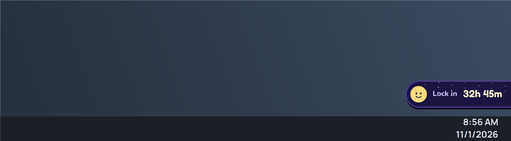
Hours setting — 32h 45m
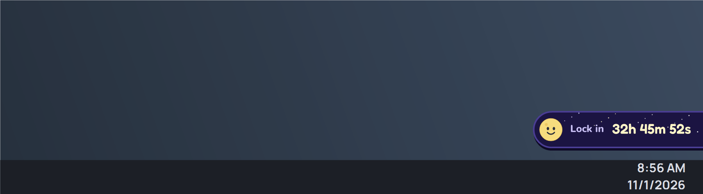
Hours setting, seconds shown — 32h 45m 52s
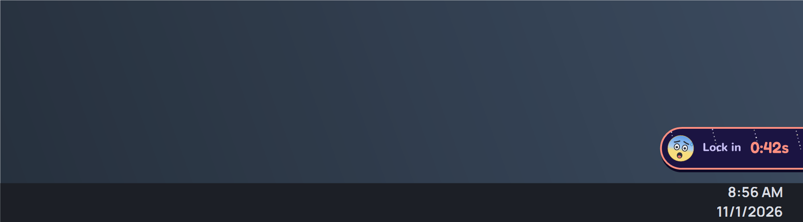
Last minute — 0:42s (always seconds)
Time formats — es-MX
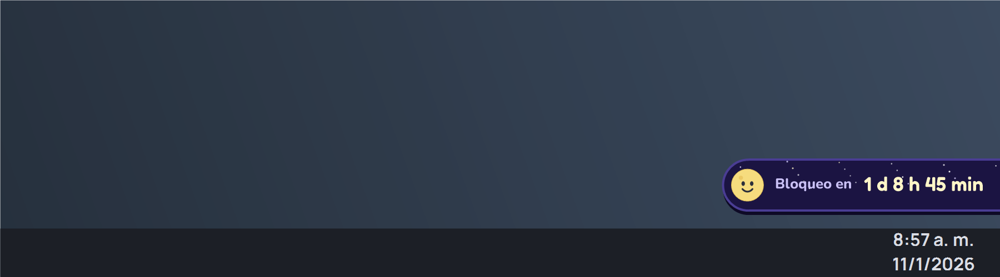
1 d 8 h 45 min
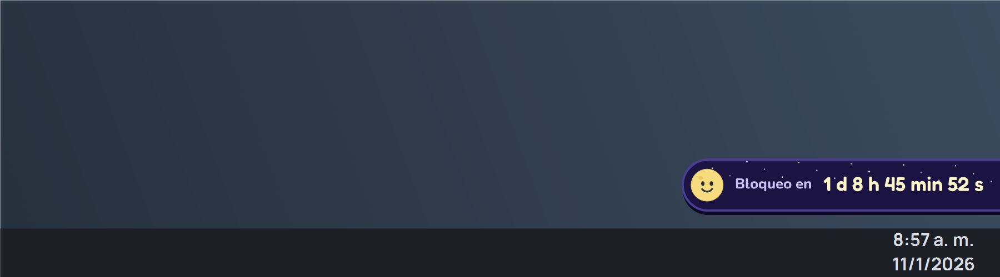
1 d 8 h 45 min 52 s
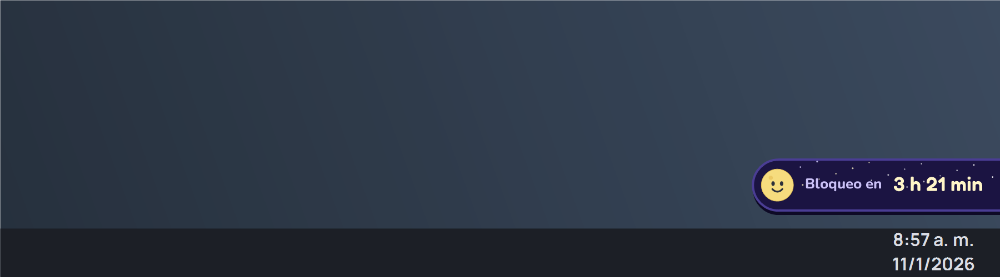
3 h 21 min
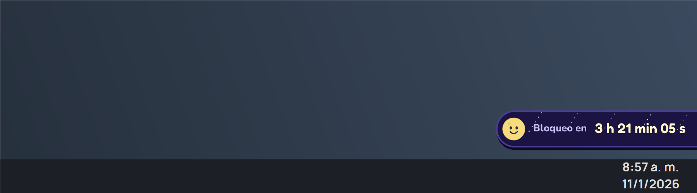
3 h 21 min 05 s
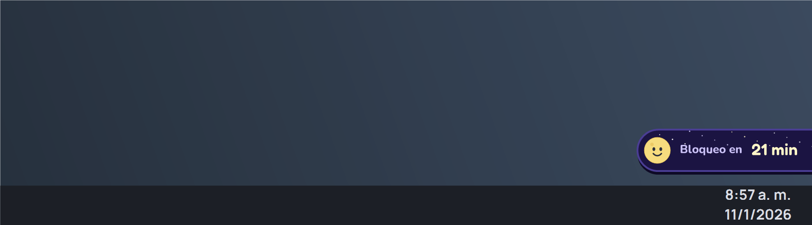
21 min
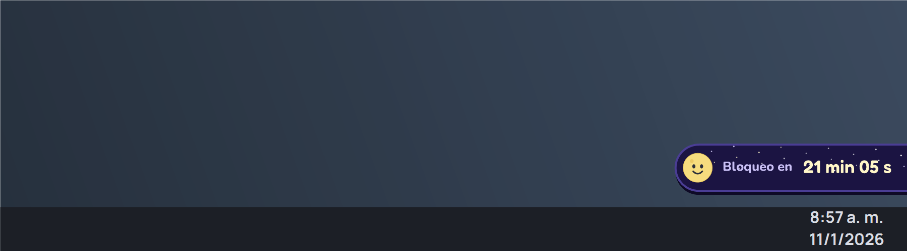
21 min 05 s
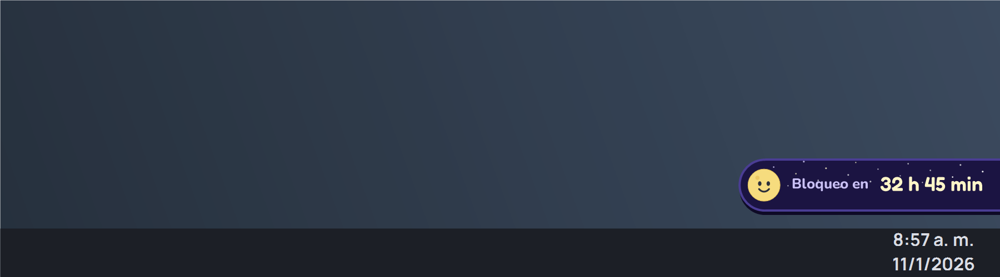
32 h 45 min
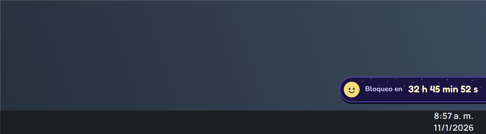
32 h 45 min 52 s
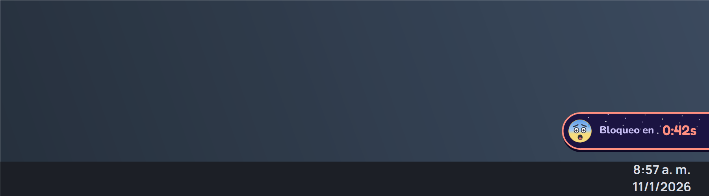
0:42s
Status message, then morph into the countdown
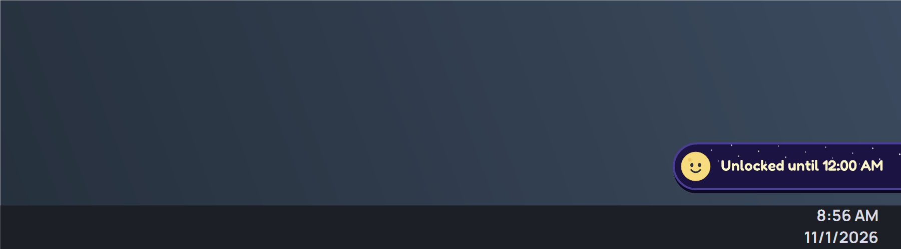
Message — Night sky
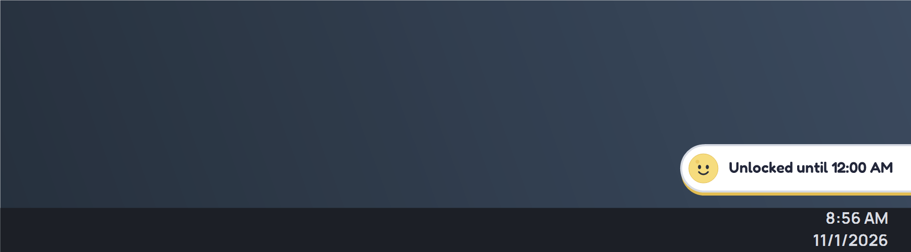
Message — Moon gray
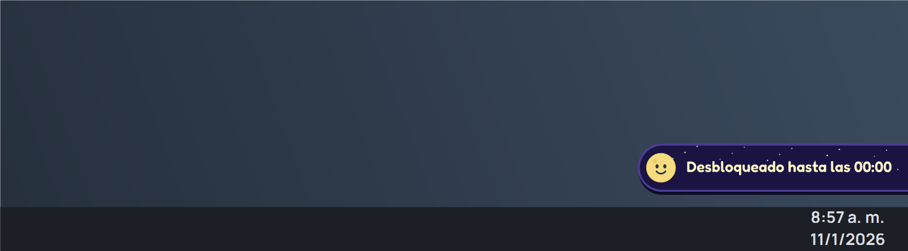
Message — es-MX
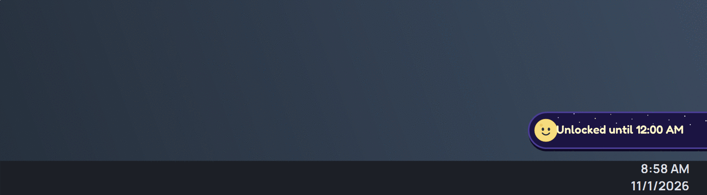
4 s hold, cross-fade/slide text and animated width
Grimace clipping (100%, 125%, 150%)
100%125%
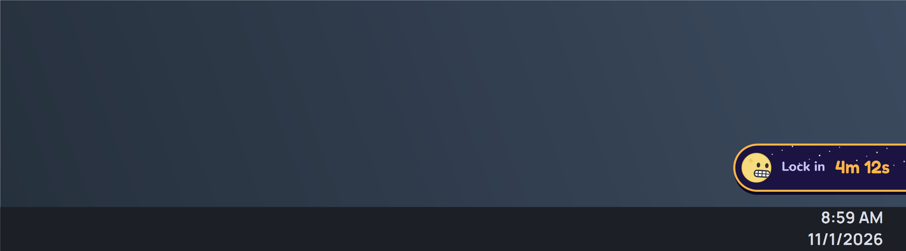
150%
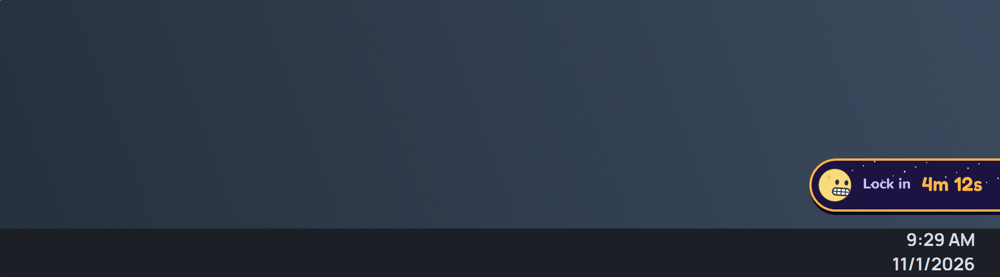
Full glance loop — eyes and mouth stay inside the moon
Rendered with the real PillArt paint code in a 900×250 scene from the Dell XPS build host. The 100/125/150 images use the same vector paint at those output scales.